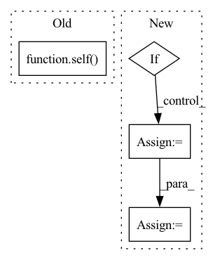

Pattern ID :30203
Before Change
return total_loss
def predict(self, *input, **kwargs):
return self( *input)
def evaluate(
self, dataset: BaseDataset = None, model_path: str = None, metrics: list = (),
):After Change
outputs = self.predict_batch(inputs)
// check if outputs is OrderedDict for segmentation
if isinstance(outputs, collections.Mapping):
outputs = outputs["out"]
predicted_probs, predicted = self.get_predicted(outputs)
y_pred_probs += list(predicted_probs.cpu().detach().numpy())
y_pred += list(predicted.cpu().detach().numpy())
y_true += list(labels.cpu().detach().numpy())In pattern: SUPERPATTERN
Frequency: 3
Non-data size: 4
Instances Fragment ID: 89658056
Project Name: biasvariancelabs/aitlas
Commit Name: 20fa9fcb308eaf8f8d4d8f8e197f761588d8a051
Time: 2021-01-29
Author: ivica.dimitrovski@gmail.com
File Name: aitlas/base/models.py
M Class Name: BaseModel
N Class Name: BaseModel
M Method Name: predict(3)
N Method Name: predict(1)
M Parent Class: nn.Module,Configurable
N Parent Class: nn.Module,Configurable
M File Name: aitlas/base/models.py
N File Name: aitlas/base/models.py
M Start Line: 160
M End Line: 160
N Start Line: 239
N End Line: 264
Before Change
if self.mixup_cutmix is not None:
images, labels = self.mixup_cutmix(images, labels)
logits = self( images)
loss = F.cross_entropy(logits, labels, label_smoothing=self.hparams.label_smoothing)
self.log("train/loss", loss, sync_dist=True)
return lossAfter Change
if self.mixup_cutmix is not None:
images, labels = self.mixup_cutmix(images, labels)
if self.hparams.channels_last:
images = images.to(memory_format=torch.channels_last)
logits = self.model(images)
loss = F.cross_entropy(logits, labels, label_smoothing=self.hparams.label_smoothing)
self.log("train/loss", loss, sync_dist=True)
Fragment ID: 89658060
Project Name: gau-nernst/vision-toolbox
Commit Name: 6c2760d3e4d331196464c785c6fd66604eb31de7
Time: 2022-02-06
Author: gau.nernst@yahoo.com.sg
File Name: classifier.py
M Class Name: ImageClassifier
N Class Name: ImageClassifier
M Method Name: training_step(3)
N Method Name: training_step(3)
M Parent Class: pl.LightningModule
N Parent Class: pl.LightningModule
M File Name: classifier.py
N File Name: classifier.py
M Start Line: 143
M End Line: 148
N Start Line: 143
N End Line: 150
Before Change
no_inf_rows=True,
)
return self(pos_scores=positive_scores, neg_scores=negative_scores)
def forward(
self,
pos_scores: torch.FloatTensor,After Change
// subtract margin from positive scores
positive_scores = positive_scores - self.margin
// normalize positive score shape
if positive_scores.ndim < negative_scores.ndim:
positive_scores = positive_scores.unsqueeze(dim=-1)
// divide by temperature
positive_scores = positive_scores / self.inverse_softmax_temperature
negative_scores = negative_scores / self.inverse_softmax_temperature
return super().process_slcwa_scores(
positive_scores=positive_scores, Fragment ID: 89658064
Project Name: pykeen/pykeen
Commit Name: d7ee986026065997398ab72152f0365224d9e374
Time: 2022-05-17
Author: berrendorf@dbs.ifi.lmu.de
File Name: src/pykeen/losses.py
M Class Name: InfoNCELoss
N Class Name: InfoNCELoss
M Method Name: process_slcwa_scores(6)
N Method Name: process_slcwa_scores(6)
M Parent Class: CrossEntropyLoss
N Parent Class: SetwiseLoss
M File Name: src/pykeen/losses.py
N File Name: src/pykeen/losses.py
M Start Line: 1380
M End Line: 1390
N Start Line: 1257
N End Line: 1270